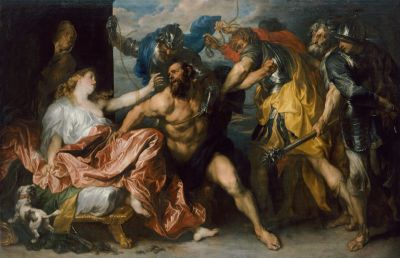

Владимир Макаров
"САМСОН И ДАЛИЛА"
Рок-опера
Москва
Февраль 2020
Автор выражает благодарность своей однокласснице Ирине Коледенковой, которая своими идеями и добрыми советами вдохновила его на написание данного произведения.
Владимир Макаров
| 
|
| Рубенс. Самсон и Далила
|
Действующие лица
| Самсон | - Ветхозаветный Судья-герой Земли Обетованной, прославившийся своими подвигами в борьбе с филистимлянами
|
| Маной и его жена | - Отец и мать Самсона
|
| Самуил | - Ветхозаветный пророк, последний из Судей израильских, написавший "Книгу судей", в которой он изложил историю Самсона и Далилы
|
| Юная дева | - Филистимлянка, впоследствии жена Самсона
|
| Отец девы | - Отец филистимлянки, жены Самсона
|
| Ангел | - Ангел Господень, предсказавший рождение Самсона
|
| Молодой Лев | - Лев, напавший на Самсона
|
| Иудеи | - Жители Земли Обетованной
|
| Филистимляне | - Древний народ, населявший приморскую часть Израиля и враждовавший с Иудеями
|
| Далила | - Филистимлянка, возлюбленная Самсона, позже предавшая его
|
| Красавица Иудейка | - Служанка пророка Самуила
|
Действие 1
Занавес открывается. Сцена погружена в темноту. Появляется луч света, освещающий седовласого старца, старательно пишущего что-то на пергаменте. Горит лучина. Вокруг стола лежат уже написанные ранее свитки. Он медленно поднимает голову, задумчиво смотрит вдаль и начинает говорить.
Пророк Самуил:
Уж десять лет как не у власти,
В пещере мрачной я живу.
И лишь пергаменту подвластна
Историй правда, что пишу.
Давно не должен никому,
Лишь Яхве, Богу моему.
Закончить должен труд я свой,
Вот "Книга Судей" предо мной.
Недавно приходил юнец,
Что хлеб и воду приносил,
Он удивлен был, что Творец
Грехов паденье допустил.
Но те, кто юн, всегда спешат,
А нужно в Книгу бросить взгляд.
Мы не исполнили Завет,
Должны держать теперь ответ.
Филистимляне к нам пришли,
Большие беды принесли.
Вину Израиль осознал,
И Бог Самсона нам послал.
О том пойдет сейчас мой сказ,
Но прежде дам я вам наказ.
Есть в книге сей двойная цель,
Ты разгадать её сумей...
Свет гаснет. Пещеры и Старца больше не видно. На ночном небе зажигается и ярко горит синим пламенем звезда Давида.
Действие 2
Крестьянский дом. Рядом видны засеянные поля, виноградники и сад с тенистыми смоковницами. Маной из колена Данов и его Жена ведут беседу. К ним является Ангел Господень.
Маной:
Боги на небе, Иеговы посланники,
К вам вопию в безутешном рыдании.
С милой моей мы Бога избранники,
Жизнь же проводим в вечном блуждании.
Жена Маноя:
Всем, кто из Данов во браке живет,
Ангел небесный дарует приплод.
Дом наш как чаша, запасов полно,
Но нам сыночка судьбой не дано.
Маной и Жена вместе:
Между Цорой, Естаолом
В Ханаане мы живем,
Тору мы читаем Богу,
Скоро сына заведем.
Появляется Ангел Господень:
Плода нет, и не рожаешь,
Но зачнешь без суеты,
Правду ты сейчас узнаешь,
Вин не пей, не ешь свиньи.
Будет сын тобой рожден,
И Самсоном наречен,
Лишь волос не состриги,
А не то убьют враги.
Маной:
Господи Боже мой, стой, погоди,
За чудо, что видел, козленка прими!
Как твое Имя, чем славить тебя?
Бога увидев, умрем навсегда.
Ангел:
Имя чудное мое
Не расскажет ничего.
А завет мой выполняй,
Путь, что избран, не теряй.
На заднем плане появляются отблески жертвенного огня, зажженного Маноем для козленка. Ангел входит в огонь, растворяется в нем и возносится на небо.
Маной и Жена вместе:
Между Цорой, Естаолом
В Ханаане мы живем,
Тору мы читаем Богу,
Сына скоро обретем.
Действие 3
Свет на сцене постепенно меркнет, на ночном небе вновь зажигается звезда Давида. Вдали слышится громкий крик новорожденного младенца и радостные возгласы Иудеев, приветствующих появление нового Судьи-героя, спасителя Земли Обетованной. На сцене возникает пещера. Пророк Самуил отводит руку с пером от пергамента и начинает говорить.
Пророк Самуил:
Жена и Маной завет выполняют,
В срок, что завещан, сына рожают.
Свиней не едят, вина не глотнут,
Голову сыну совсем не стригут.
Маной и ахнуть не успел,
Как быстро сын их повзрослел,
Волшебной силой награжден,
Одна беда - Самсон влюблен.
Действие 4
Дом Маноя. Самсон упрашивает родителей благословить его женитьбу на Филистимлянке.
Мать, обращаясь к Самсону:
Два дня горит огонь плиты,
Остыл форшмак, полно мацы.
От пищи кошерной не будет беды,
Хоть крошку цимеса ты проглоти!
Самсон:
Деву дивную в Фимнафе увидал,
И с той поры покой я потерял.
Талия ее как амфора узка,
А душою до чего же хороша!
Маной:
Филистимлянки - наши враги,
В Израиле деву можно найти.
Ты древних Данов позоришь род,
Иегову озлобишь, не дай нам Бог!
Самсон:
Не властны мы судьбою управлять,
Путей Господних не дано нам знать,
Ту Деву в Фимнафе я полюбил,
Евреем несчастий не причинил.
Слышен голос Ангела с небес:
От Господа Дева Самсону дана,
Филистимлянка и впрямь хороша.
Лишь Бог намечает судьбы поворот,
Самсон всех Гоев скоро убьет.
Маной и жена вместе:
Между Цорой, Естаолом
В Ханаане мы живем,
Тору мы читаем Богу,
Гоев со свету сживем.
Действие 5
Самсон направляется в Фимнафу чтобы посватать Филистимлянку. По дороге на Самсона нападает Молодой Лев.
Самсон радуется предстоящей женитьбе:
Глаза ее как омут в Иордане,
Волос коса как водопад Танур,
В волнах страстей плыву как в океане,
Огонь любви зажег во мне Амур.
Появляется Молодой Лев:
Брожу по Палестине уж неделю,
Я царь зверей, а пищи нет и нет,
Мне козы и бараны надоели,
Но есть Евреев не велитЗавет.
Ангел Господень подбивает Льва напасть на Самсона:
Ты царь зверей, или не царь?
Обет ты дал, а что же на обед?
В окрестностях Фимнафы ты пошарь,
Забудь запрет, теперь ты людоед.
Молодой Лев нападает на Самсона. Но в этот момент в Самсона сходит Дух Господень, и он голыми руками раздирает льву пасть и терзает его как ягненка. Лев умирает, в пасть к нему залетает рой пчел и откладывает там мед.
Самсон:
Мне силы Господом даны,
В его руках судьба моя,
Не вижу я ничьей вины,
Возьму-ка мед из пасти Льва.
Самсон набирает мед из пасти поверженного Льва и продолжает свой путь в Фимнафу.
Ангел Господень:
На мир Самсон смотреть умел,
Теперь же вправду он прозрел,
И в пасти Льва нет мух и смрада,
Целебный мед на смену яда.
Действие 6
Самсон приходит в дом невесты, где устраивает по традиции семидневный пир. На пиру присутствуют Филистимляне, по легенде 30 человек, брачные друзья невесты.
Самсон на пиру:
Гостям я рад, невеста хороша,
Но нет покоя, и болит душа,
Вчера Господь глаза мои открыл,
О чуде том пусть знает мир.
Загадку я сейчас скажу,
Семь дней ответ от вас я жду:
"Кто ел - родил, что можно есть,
А сильный - сладостную смесь
{1}".
Ответ дадите вы мне в срок,
Исполню я для вас зарок:
Одежды новой дам я вам,
А нет, свой долг вернете нам.
Филистимляне Невесте:
Какой теперь от свадьбы прок,
Идет к концу Самсона срок,
Скорее к мужу ты ступай,
Ответ к загадке ты узнай.
Иначе быть большой беде,
Тебе, отцу и всей родне,
Сожжем огнем тебя и дом,
И всех, кого мы в нем найдем.
Невеста Самсону:
Загадку всем ты загадал,
А мне ответа ведь не дал,
Наверно, разлюбил меня,
Погибну я и вся родня.
Самсон наклоняется к Невесте и говорит ей на ушко отгадку. Невеста тут же бежит к свадебным гостям и сообщает им правильный ответ.
Филистимляне Самсону:
Загадки знаем мы решенье,
То Лев и мед на угощенье,
Ты нам верни скорей долги,
Раз слово дал, ответ держи.
В этот момент на Самсона сходит Дух Господень. На заднем плане сцены видны тени и крики убиенных: Самсон, придя в город Аскалон, начинает сражение и убивает тридцать филистимлян. Затем он возвращается с грудой одежды, снятой с убитых, и в гневе кидает ее к ногам свадебных гостей.
Самсон, обращаясь к брачным друзьям Невесты:
О, если б вы не угрожали,
То и ответа бы не знали,
Невеста предала меня,
Вернусь домой, ее кляня.
Самсон, не перенеся предательства, в страшном гневе покидает свадебный пир.
Отец Невесты обращается к брачным друзьям:
Самсон ушел и слава Богу,
Зачем нам в доме Иудей?
Я дочь отдам теперь любому
Из вас, кто будет посмелей.
Один из брачных друзей:
Невеста мне дана по праву,
Чтоб пир наш славный завершить,
Беру жену не для забавы,
Мы дружно с нею будем жить.
Самсон понимает, что по-прежнему еще влюблен, гнев его остывает, и он возвращается, чтобы помириться с Невестой. Но филистимлянин уже взял ее себе в жены.
Самсон, обращаясь к Отцу Невесты:
Козленка я принес вам в дар,
И в сердце гнева больше нет,
Любви в душе моей пожар,
Жениться дал святой обет.
Отец Невесты:
Я думал, что любовь прошла,
Другому Дева отдана,
И в дом тебя свой не пущу,
Хоть о поступке и грущу.
Самсон:
Терпенье лопнуло мое,
Творить теперь я буду зло.
Пред Господом своим я прав,
Прощенья нет, мой путь кровав.
Действие 7
Вновь видна пещера и пророк Самуил, пишущий "Книгу судей". На небе сияет Звезда Давида. В пещеру сходит Ангел Господень.
Ангел Господень, обращаясь к Самуилу:
Уж десять лет как ты в трудах,
А правду пишешь или ложь?
Самсона славишь ты в веках,
А так ли уж герой хорош?
Пророк Самуил:
Мое перо в твоей руке,
И в зле порой бывает прок,
Ложь часто прячется в добре,
Не будь к Самсону так уж строг.
Лишь Яхве держит рока нить,
Что к сердцу каждого ведет.
Нам истине дано служить,
Пергамент никогда не лжет.
Ангел исчезает, пророк Самуил продолжает писать "Книгу судей", читая вслух новую, только что написанную главу.
Пророк Самуил:
Итак, Самсон.... Искрят глаза,
И план готов, как отомстить,
Вот триста лис, горит лоза,
Бегут, чтоб пламя разносить.
Сожгли весь хлеб, дома, сады,
Филистимляне живы чуть,
Да это было б полбеды,
Назад судьбу им не вернуть.
Чтоб ужас сей остановить,
Решили всех они казнить,
Отца, Невесту и юнца,
Что Деву взял из-под венца.
Самсон ту жертву принимает,
Но гнев его не покидает.
Врагов повсюду кровь и стон,
Самсон в ущелье окружен.
Евреи шлют к нему гонца:
"Нам не нужна твоя война,
Давай тебя мы только свяжем,
И недругам мы честь окажем".
Вот вывели его к врагам,
Веревки все - напополам,
То Дух Господень тут как тут,
И в панике враги бегут.
В руках Самсона прах осла,
Кругом толпа лежит мертва.
И Бог Самсона не забыл,
Водою свежей напоил.
Родник дожил до наших дней,
Водою кормит всех людей,
Еврей ты, или не еврей,
Понять, в чем истина, сумей.
Действие 8
После битвы с Филистимлянами Самсона встречают Иудеи и выбирают его Судьей Израиля на 20 лет.
Иудеи хором, обращаясь к Самсону:
Прости, Самсон, ты нам вину,
Тебя мы недругам отдали,
Мы долго мучились в плену,
И разум, видно, потеряли.
Когда же Дух с небес сошел,
И путы с рук твоих упали,
Мы поняли - Герой пришел,
А пред Иеговой ниц мы пали.
Посланник Бога на земле,
По праву будь Судьей над нами,
Завет, что дан нам в каббале,
Сулит победу над врагами.
Появляется Ангел Господень:
Сыны Израиля, внемлите,
Заветы Яхве свято чтите,
Страшны не внешние враги,
А те, что спрятаны в груди.
Самсон:
От Бога сила мне дана,
Ее беречь и множить буду,
И пусть изыдет Сатана,
Заветы Яхве не забуду.
Судить я буду по закону,
Что Моисей нам прописал.
В одной руке держу я Тору,
В другой - заточенный кинжал.
Действие 9
Появляется пещера и в ней пророк Самуил. Звезда Давида на небе начинает мерцать и теряет часть своего голубого блеска, окрашиваясь в багряные полутона. Затем снова сияет, как прежде. Самуил с удивлением смотрит на звезду. Отводит взгляд от нее и говорит.
Пророк Самуил:
Даем мы часто обещанья
Дорогой праведной идти,
Но коль не ждем мы наказанья,
То сходим с верного пути.
Самсон порвал евреев путы,
А вервь страстей не разорвал,
Штурмует он любви редуты,
Уж скольких женщин он познал.
Вот в Газе случай приключился,
Самсон там в блудницу в любился,
Враги его всю ночку ждут
Ворота града стерегут.
Самсон ворота те хватает,
В Хевроне их с горы швыряет,
Как прежде силы в мышцах есть,
На блуд их тратит наш храбрец.
Появляется Ангел Господень:
Не всем дано заветы чтить,
Но подождем судьбы решенье.
Не просто жить и не любить,
Тогда и жизнь - одно мученье.
Действие 10
Самсон идет в долину реки Сорек, где случайно на улице встречается и обменивается взглядами с Далилой. В их сердцах вспыхивает и разгорается огонь взаимной, необузданной и дикой страсти.
Далила, придя к себе домой:
Не верю я, что наций много,
По мне на свете только две:
Мужчины нам даны от Бога,
Мир женщин в вечной суете.
Мы ищем статных и красивых,
Высоких, умных, неревнивых,
Найти их, право, нелегко,
А замуж хочется давно.
В тринадцать лет любовь познала,
В постель его не зазывала,
Был сладок юноша как мед,
Надеюсь всяк меня поймет.
Любовных дел шла череда,
А обо мне пошла молва,
Мол, всем Далила хороша,
Какого ж нужно ей рожна?
Вот воин в тунике короткой
Мне сердце-руку предлагал.
Купец же в дорогой обновке,
Жениться вскоре обещал.
Но сердце чувством не горело,
Душа избранника ждала,
Такого, как Самсон хотела,
И вот героя я нашла.
Самсон, после встречи с Далилой:
Огня Амур мне сердце жжет,
Лишь кто влюблен, меня поймет.
Та Дева - чудной красоты,
Боюсь, сгорю в пылу любви.
Скорее к ней, чтоб пыл унять,
Ее не силой, лаской взять,
И тонкий стан ее обнять,
Девичью грудь поцеловать.
Самсон узнает, где живет Далила и приходит к ней в дом. Они лишь на мгновение замирают на месте, а потом бросаются в объятия друг друга.
Самсон и Далила:
Повстречались близ Сорека,
Два влюбленных человека.
Нам твердили о запрете,
Без любви кто жил на свете.
Навсегда теперь мы вместе,
"Тору" неги мы листаем,
Не до битвы нам и мести,
От любви изнемогаем.
- Ах, Самсончик, дорогой,
Ты теперь навеки мой!
- Ой, Далила, лань моя,
Обожаю я тебя!
Действие 11
В пещере Ангел Господень и Пророк Самуил ведут беседу о Самсоне. Звезда Давида изменила свой голубой цвет и теперь горит на небе тревожным ярко-красным пламенем.
Ангел Господень и Самуил ведут разговор:
- Шалом, мой верный Самуил,
Как наш Самсон, не нагрешил?
- Увы, Небесный Господин,
Герой Далилу полюбил.
- Не вижу в том греха, Пророк,
Любовь дозволил вам сам Бог,
Велел вам род преумножать,
А без любви нельзя рожать.
- С Богами трудно спорить мне,
От этих споров быть беде,
Но Деве той Самсон не муж,
В грехе живет, а блуд нам чужд
{2}.
- Уж год Израиль без Судьи,
Поля травой все заросли.
И день, и ночь в постели он,
Боюсь, не сможет быть прощен.
- Дурная весть мне сердце жжет,
Но Книга Судей ведь не лжет.
Историй правду ты пиши,
А на Самсона не ропщи.
Действие 12
Филистимляне предлагают Далиле 12 кг серебра за секрет силы Самсона. Она соглашается его выведать. В конце концов, Самсон открывает Далиле свою тайну. Филистимляне хватают и ослепляют Самсона.
Филистимляне встречаются с Далилой, когда она одна дома:
Любовь не вечна под луной,
А миром правит злата сила.
Самсона силу ты раскрой,
Не верим мы, что ты любима.
Сегодня, правда, он с тобой,
А завтра встретит он другую.
И будешь ты навек одной,
Нам цену назови любую.
Далила:
Возможно, доля правды есть,
В речах, что мне вы говорили,
Монет, что вы должны, не счесть,
Чтоб я раскрыла тайну силы.
- К твоим ногам вот пуд монет,
Узнай секрет для нас, Далила.
- Согласна, дам я вам ответ,
Спрошу Самсона я про силу.
Филистимляне прячутся в спальне, появляется Самсон.
Далила и Самсон:
- Уж год, как вместе мы, Самсон,
Поведай мне секрета силу.
- Ты тетивы сырой возьми,
Меня семь раз ты обвяжи.
Когда Самсон засыпает, Далила связывает его сырой тетивой. Самсон просыпается и с легкостью освобождается от пут.
Далила и Самсон:
- Ты мне неправду говорил,
Меня, наверно, разлюбил.
- Ты косы мне переплети,
К колоде ты их прикрепи.
Самсон снова засыпает. Далила переплетает семь кос Самсона тканью и прибивает их к ткальной колоде. Самсон просыпается и снова с легкостью освобождается от пут.
Далила:
Ты обманул меня опять,
Самсона сердце не со мною.
Любимой правду не сказать?
Да я скорей уйду к другому!
Самсон:
Открою сердце пред тобой,
Ведь я любим и ты любима!
Состричь все волосы долой,
И сила станет уязвима.
Самсон засыпает вновь. Из укрытия выходят Филистимляне. Один из них состригает косы с головы Самсона. Самсон просыпается, но без волос силы оставляют его. Филистимляне хватают Самсона, ослепляют и уводят в Газу, где заковывают его в цепи и заставляют работать на мельнице.
Действие 13
Филистимляне чествуют своего бога Дагона и приводят в храм Самсона, чтобы повеселиться над ним. Но у Самсона снова отросли волосы, и он обрел прежнюю силу. Он воздает молитву Богу.
Филистимляне:
Дагон, наш Бог, ты дар прими,
Врага отдал ты в руки наши,
Нет силы в нем, глаза пусты,
Испить ему страданий чашу.
Самсон, обращаясь к Господу:
О, Господи, забыл меня,
Но я тебя вовеки помню.
Ты прав, во всем меня виня,
И жизнь моя давно никчемна.
Но дай мне силы умереть,
Не как рабу, но как Герою,
Я цепи разорву как клеть,
Чрез смерть я выйду на свободу.
Самсон, расшатывая колонны храма Дагона, к которым были прикованы его руки, разрушает храм, погребя под его обломками себя вместе со всеми своими многочисленными врагами.
Действие 14
Эпилог
Пещера. Ангел Господень и Пророк Самуил ведут беседу.
Пророк Самуил:
Герой погиб, Самсона нет,
А кто же даст теперь ответ,
Была судьба его светла,
Иль было больше в ней греха?
Перо в руках своих держу,
Ответа от Небес я жду,
От Бога дар он получил,
А кто Героя погубил?
Своей судьбы он нить держал,
Но Назареем все ж не стал.
Далилы роль тут какова,
О том расходится молва.
Ангел Господень:
Я вижу, труд закончен твой,
И, может, хочешь на покой?
Но прежде чем убрать перо,
Давай сравним добро и зло.
Господь избрал Евреев род,
Людей избавить от невзгод.
Самсону силу он вручил,
Чтоб он врагов в себе убил.
А вспомни Льва и мед во рту,
Самсон прозрел чрез слепоту,
Не в глазе слепота была,
Неразвита была душа.
Когда ж Далилу увидал,
То зренье он уж потерял.
Конечно, он смотрел вокруг,
То был больной души недуг.
И лишь когда он умирал,
То снова Назареем стал.
Ты в притче ищешь лишь финал,
Но в вечность с Книгой ты попал.
Года пройдут, пройдут века,
Художников, поэтов тьма
Самсона пут не разорвут,
Отгадку вряд ли обретут.
В пещеру вместо юноши, который обычно приносил Самуилу воду и хлеб, заходит юная Красавица Иудейка, игриво посматривающая на Ангела и Самуила, заканчивающих свой разговор.
Красавица Иудейка Самуилу и Ангелу:
Ах, Боже мой, ты не один,
Небес Посланника я вижу,
Кусок мацы, воды кувшин...
Ответа нет..., иль я не слышу?
Ангел Господень, возвращаясь на небо:
"О времена! О нравы"
{3}
На небе появляется и вновь сияет голубым ярким светом Звезда Давида.
Занавес опускается.
Конец представления.
{kind=link}